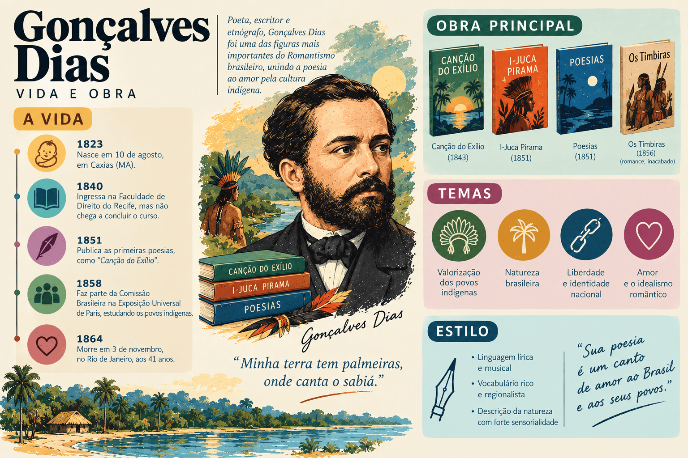

Gonçalves Dias: biografia, obras, características literárias e legado
Gonçalves Dias foi poeta, dramaturgo, etnógrafo, historiador, professor e advogado. Considerado o maior poeta da Primeira Geração do Romantismo no Brasil (a geração nacionalista e indianista), desempenhou papel decisivo na construção de uma identidade literária brasileira após a Independência, unindo exaltação da natureza, idealização heroica do indígena, lirismo amoroso e extraordinário domínio do ritmo poético.
Seu nome completo era Antônio Gonçalves Dias. Nascido em Caxias, no interior do Maranhão, em 1823, consolidou-se como o mais célebre representante do grupo intelectual que projetou o estado como a "Atenas Brasileira" no século XIX.
Autor dos versos mais conhecidos da língua portuguesa no Brasil — a "Canção do Exílio" — e da obra-prima épico-lírica "I-Juca-Pirama", Gonçalves Dias articulou a herança formal clássica portuguesa à temática americana, tornando-se presença obrigatória no estudo do Romantismo para o Ensino Médio, o ENEM, o PAES UEMA e os principais vestibulares do país.

Gonçalves Dias em resumo
- Nome completo: Antônio Gonçalves Dias.
- Nascimento: 10 de agosto de 1823, em Caxias, Maranhão.
- Falecimento: 3 de novembro de 1864, em naufrágio nos baixios de Atins (litoral de Guimarães, Maranhão).
- Movimento literário: Romantismo — Primeira Geração (Nacionalista / Indianista).
- Gêneros: poesia lírica, poesia épico-narrativa, teatro (drama histórico) e etnografia.
- Obras principais: Primeiros Cantos (1846), Segundos Cantos (1848), Últimos Cantos (1851) e Os Timbiras (1857).
- Poemas mais famosos: "Canção do Exílio", "I-Juca-Pirama", "Leito de Folhas Verdes" e "Marabá".
- Instituição: patrono da Cadeira nº 15 da Academia Brasileira de Letras.
- Estilo: musicalidade apurada, variedade rítmica e métrica, indianismo heroico, saudosismo pátrio e religiosidade.
Quem foi Gonçalves Dias?
Antônio Gonçalves Dias nasceu em 10 de agosto de 1823 no sítio Boa Vista, em terras de Jatobá, próximo à vila de Caxias, no Maranhão. O ano de seu nascimento coincide com as lutas finais pela consolidação da Independência do Brasil na província maranhense.
Era filho de João Manuel Gonçalves Dias, comerciante português natural de Trás-os-Montes, e de Vicência Mendes Ferreira, mulher mestiça (cafuza, com ascendência indígena e negra). O próprio poeta costumava destacar com orgulho que reunia em seu sangue as três matrizes étnicas formadoras do povo brasileiro: o europeu, o indígena e o africano.
Nos primeiros anos da infância viveu com a mãe, mas em 1829, quando seu pai contraiu matrimônio oficial com Adelaide Ramos de Almeida, o menino passou aos cuidados da família paterna. Demonstrou precocemente grande talento para os estudos de línguas e humanidades, trabalhando como caixeiro no armazém do pai enquanto iniciava aulas de latim, francês e filosofia em Caxias.
Estudos em Coimbra e a criação da "Canção do Exílio"
Em 1838, Gonçalves Dias embarcou para Portugal a fim de concluir os estudos preparatórios e ingressar na Faculdade de Direito da Universidade de Coimbra. Após a morte do pai, enfrentou severas dificuldades financeiras em solo português, mas conseguiu manter-se nos estudos graças ao auxílio de colegas e conterrâneos maranhenses.
Em Coimbra, entrou em contato direto com o Romantismo europeu — lendo autores como Almeida Garrett, Alexandre Herculano, Victor Hugo, Chateaubriand, Goethe e Schiller — e participou do grupo poético ligado ao periódico O Trovador.
Foi nesse ambiente de distância geográfica, saudade da terra natal e descoberta da estética romântica que escreveu, em julho de 1843, aos dezenove anos, a célebre "Canção do Exílio". Formou-se bacharel em Direito em 1845 e regressou ao Maranhão no mesmo ano.
Carreira no Rio de Janeiro, expedições científicas e morte no naufrágio
Em 1846, Gonçalves Dias transferiu-se para o Rio de Janeiro, então capital do Império. O lançamento de Primeiros Cantos conquistou admiração imediata do público e do crítico português Alexandre Herculano. Sob a proteção do imperador Dom Pedro II, ingressou no Instituto Histórico e Geográfico Brasileiro (IHGB) e tornou-se professor de Latim e História do Brasil no Colégio Pedro II.
Fundou, ao lado de Joaquim Manuel de Macedo e Manuel de Araújo Porto-Alegre, a revista Guanabara (1849), importante veículo de consolidação do Romantismo brasileiro. Na vida pessoal, viveu uma paixão frustrada por Ana Amélia Ferreira do Vale, jovem maranhense cuja família recusou o pedido de casamento devido à origem mestiça e ilegítima do poeta — episódio que inspirou o famoso poema lírico "Ainda uma vez — Adeus!".
Entre 1854 e 1858, cumpriu missões oficiais na Europa pesquisando arquivos históricos e sistemas de instrução pública. De volta ao Brasil, integrou entre 1859 e 1861 a Comissão Científica de Exploração, percorrendo o Norte e o vale amazônico para estudar os povos indígenas em seu ambiente real. Gravemente enfermo, viajou à Europa em busca de tratamento médico. Em setembro de 1864, embarcou de volta para o Maranhão no navio francês Ville de Boulogne. Na madrugada de 3 de novembro de 1864, a embarcação chocou-se contra os baixios de Atins, no litoral de Guimarães (MA). Todos os tripulantes conseguiram salvar-se, exceto Gonçalves Dias, que, agonizante e sem forças em sua cabine, morreu afogado aos 41 anos, avistando o litoral de sua terra natal.
Contexto histórico: Independência, Segundo Reinado e a "Atenas Brasileira"
A produção de Gonçalves Dias está diretamente vinculada ao esforço político e cultural de afirmação do Brasil como nação soberana no século XIX:
- a necessidade de criar uma literatura autônoma após a Independência de 1822, diferenciando a cultura brasileira da antiga metrópole portuguesa;
- a estabilidade política alcançada no Segundo Reinado sob o mecenato cultural de Dom Pedro II e do IHGB;
- a escolha do indígena como símbolo de ancestralidade nobre e heroica para o país, equivalente ao cavaleiro medieval das nações europeias;
- o apogeu econômico e intelectual de São Luís e Caxias no século XIX, quando a riqueza da exportação de algodão permitiu que jovens maranhenses estudassem na Europa, formando a geração da "Atenas Brasileira" (ao lado de Odorico Mendes, João Francisco Lisboa e Sotero dos Reis).
Ponto importante: Diferentemente de outros escritores românticos que conheciam o indígena apenas por leituras estrangeiras, Gonçalves Dias estudou profundamente os cronistas coloniais, percorreu aldeias amazônicas como etnógrafo e chegou a compilar o Dicionário da Língua Tupi (1858).
Características literárias de Gonçalves Dias
A poesia gonçalvina destaca-se pelo equilíbrio entre a emoção romântica e a precisão técnica do verso:
- Indianismo heroico e mítico: o indígena é retratado como guerreiro altivo, corajoso, leal às tradições da tribo e dotado de elevado código de honra moral.
- Nacionalismo e exaltação da natureza (cor local): a fauna, a flora, as matas virgens, os rios e o céu do Brasil são celebrados como espaços sagrados e superiores aos da Europa.
- Saudosismo e nostalgia: a distância da pátria e da infância desperta o sentimento de exílio e o desejo de comunhão com a terra natal.
- Musicalidade e domínio do ritmo: uso magistral de diferentes medidas métricas (redondilhas, decassílabos, versos curtos de ritmo binário e anapéstico) que imitam desde o som dos tambores de guerra até a brisa suave.
- Lirismo amoroso contido: expressão da dor amorosa, da renúncia e do desencontro afetivo sem os exageros mórbidos da segunda geração (Ultrarromantismo).
- Religiosidade cristã e panteísmo: a natureza é vista como templo vivo e manifestação da grandeza divina.
- Rigor linguístico e arcaísmo intencional: domínio profundo da sintaxe clássica portuguesa, chegando a compor poemas em português arcaico medieval (nas Sextilhas de Frei Antão).
As vertentes da poesia de Gonçalves Dias
Nos prefácios de seus livros, o próprio Gonçalves Dias organizou sua produção lírica em grandes conjuntos temáticos:
| Vertente Poética | Temática central | Poemas exemplares |
|---|---|---|
| Poesias Americanas (Indianistas) | Rituais, combates, honra guerreira, amor e tragédia dos povos indígenas brasileiros. | "I-Juca-Pirama", "O Canto do Piaga", "Leito de Folhas Verdes", "Marabá", "Canção do Tamoio". |
| Poesias Diversas e da Natureza | Exaltação da pátria, saudade do Brasil, contemplação do mar e religiosidade panteísta. | "Canção do Exílio", "A Tarde", "O Mar", "A Minha Musa". |
| Lírica Amorosa e Íntima | Inquietação sentimental, amores impossíveis, despedida e melancolia. | "Ainda uma vez — Adeus!", "Seus Olhos", "Se se Morre de Amor!". |
| Sextilhas de Frei Antão (Medievalismo) | Recriação histórica de lendas medievais portuguesas em linguagem arcaica. | "Loa da Princesa Santa", "O Soldado Espanhol". |
Principais obras de Gonçalves Dias
| Obra | Ano | Gênero e importância |
|---|---|---|
| Primeiros Cantos | 1846 | Poesia; consolida o Romantismo nacionalista e traz a "Canção do Exílio". |
| Leonor de Mendonça | 1847 | Teatro (drama histórico em prosa); considerado uma das melhores peças do Romantismo brasileiro. |
| Segundos Cantos e Sextilhas de Frei Antão | 1848 | Poesia; aprofunda o lirismo intimista e exercita o medievalismo ibérico. |
| Últimos Cantos | 1851 | Poesia; ápice da maturidade artística do autor, contendo "I-Juca-Pirama" e "Leito de Folhas Verdes". |
| Os Timbiras | 1857 | Poema épico inacabado (quatro primeiros cantos) sobre os povos indígenas do Maranhão. |
| Dicionário da Língua Tupi | 1858 | Estudo linguístico e etnográfico sobre a língua geral falada pelos povos originários. |
Primeiros Cantos (1846) e a "Canção do Exílio"
Publicado no final de 1846 (com data de 1847 na folha de rosto de alguns exemplares), Primeiros Cantos abre com a "Canção do Exílio", poema que traz uma epígrafe em alemão de Johann Wolfgang von Goethe ("Kennst du das Land, wo die Citronen blühn..." — "Conheces a terra onde florescem os limoeiros?").
Escrita em redondilhas maiores (versos de sete sílabas poéticas, medida típica das cantigas populares), a composição estabelece uma oposição constante entre o "cá" (Coimbra, espaço do exílio, frio e desprovido de encanto) e o "lá" (o Brasil idealizado pela memória, onde cantam os sabiás e brilham as palmeiras). A simplicidade vocabular e o ritmo musical transformaram o poema na matriz de inúmeras paródias e releituras ao longo da história literária nacional, de Casimiro de Abreu a Oswald de Andrade, Murilo Mendes e Carlos Drummond de Andrade.
Últimos Cantos (1851) e a análise de "I-Juca-Pirama"
Publicado em 1851, o livro Últimos Cantos reúne as criações mais perfeitas de Gonçalves Dias, destacando-se o poema épico-dramático "I-Juca-Pirama" (expressão tupi que significa "aquele que há de ser morto e que é digno de ser morto").
Dividido em dez cantos de grande variedade métrica, o poema narra o drama de um último guerreiro da nação Tupi que, capturado pela tribo inimiga dos Timbiras, prepara-se para o ritual antropofágico de execução:
- O canto de morte e o pedido de clemência: no centro da taba timbira, ao entoar seu canto de despedida, o jovem tupi lembra-se de seu pai — velho, cego e desamparado na floresta — e chora, implorando ao chefe timbira que poupe sua vida apenas enquanto seu pai viver.
- A recusa dos Timbiras: o chefe timbira ordena que soltem o prisioneiro, recusando-se a devorar a carne de um guerreiro que chorou diante da morte: "És livre; parte / Não prestas para morrer."
- A maldição paterna: ao reencontrar o pai cego, este percebe pelo cheiro da tinta ritual e pelo cabelo cortado que o filho estivera pronto para o sacrifício. Ao saber que o filho chorou para salvar a vida, o velho tupi considera a atitude uma desonra suprema, leva-o de volta à aldeia inimiga e lança sobre ele uma terrível maldição contra a covardia.
- A redenção heroica: ferido em seu brio pela maldição do pai, o jovem guerreiro tupi lança um grito de guerra e enfrenta sozinho toda a tribo dos Timbiras, abatendo dezenas de inimigos com o tacape. Diante de tamanha bravura, o chefe timbira suspende a luta, reconhece a honra do guerreiro, e o velho pai cego abraça o filho em lágrimas de orgulho: "Este sim, que é meu filho muito amado!".
"Leito de Folhas Verdes" e "Marabá": o lirismo indígena
Além da dimensão guerreira, Gonçalves Dias destacou-se no lirismo amoroso indígena:
- "Leito de Folhas Verdes": monólogo lírico de delicada sensualidade no qual uma jovem indígena espera em vão, durante toda a noite na floresta, a chegada de seu amado guerreiro Jatir.
- "Marabá": lamento comovente de uma jovem mestiça (filha de indígena com branco, de cabelos louros e olhos verdes) que sofre dupla exclusão social: é rejeitada pelos guerreiros indígenas por não possuir os traços físicos da tribo (cabelos negros e olhos escuros) e ignorada pelos colonizadores brancos.
O Indianismo na poesia e na prosa: Gonçalves Dias vs. José de Alencar
Gonçalves Dias e José de Alencar são os dois grandes pilares do Indianismo romântico brasileiro. Embora compartilhem a idealização do indígena como herói nacional, apresentam diferenças importantes de gênero, enfoque e desfecho:
| Aspecto | Gonçalves Dias (Poesia Indianista) | José de Alencar (Prosa Indianista) |
|---|---|---|
| Gênero predominante | Poesia lírica, dramática e épica em versos metrificados. | Romance histórico-indianista e prosa poética (O Guarani, Iracema, Ubirajara). |
| Relação com o colonizador | Foco nos conflitos intertribais e na destruição trágica trazida pelo homem branco ("O Canto do Piaga"). | Ênfase na aliança simbólica e na miscigenação entre o indígena e o europeu como mito de fundação do Brasil. |
| Base etnográfica | Contato direto com povos indígenas na Amazônia e estudo linguístico do tupi. | Recriação imaginativa e estilística a partir de crônicas históricas de gabinete. |
| Visão da mestiçagem | Problematiza a solidão e a rejeição social do mestiço (como no poema "Marabá"). | Celebra o nascimento do mestiço (Moacir, em Iracema) como síntese harmoniosa do novo povo. |
Versos famosos e seus significados
- “Minha terra tem palmeiras, / Onde canta o Sabiá; / As aves, que aqui gorjeiam, / Não gorjeiam como lá.” — estrofe inaugural da "Canção do Exílio", na qual elementos simples da fauna e da flora tornam-se emblemas da identidade nacional e da saudade da pátria.
- “Meu canto de morte, / Guerreiros, ouvi: / Sou filho das selvas, / Nas selvas cresci; / Guerreiros, descendo / Da tribo tupi.” — versos em ritmo binário de cinco sílabas poéticas (redondilha menor) de "I-Juca-Pirama", reproduzindo a batida marcial dos tambores indígenas.
- “Não chores, meu filho; / Não chores, que a vida / É luta renhida: / Viver é lutar. / A vida é combate, / Que os fracos abate, / Que os fortes, os bravos, / Só pode exaltar.” — estrofe famosa da "Canção do Tamoio", síntese do código de coragem e estoicismo atribuído ao herói indígena romântico.
- “Tu choraste em presença da morte? / Na presença de estranhos choraste? / Não descendes o cobarde do forte; / Pois choraste, meu filho não és!” — momento dramático de "I-Juca-Pirama" em que o pai cego renega o filho por ter colocado o afeto familiar acima da honra guerreira da tribo.
Importância e legado de Gonçalves Dias
A contribuição de Gonçalves Dias para a literatura brasileira consolidou as bases da nossa lírica moderna:
- Deu autonomia estética ao Romantismo brasileiro, libertando a poesia nacional da imitação servil dos modelos arcádicos portugueses;
- Criou na "Canção do Exílio" o texto mais citado, parodiado e dialogado de toda a cultura brasileira;
- Elevou o indígena e a natureza americana à condição de alta matéria épica e lírica;
- Demonstrou domínio técnico e musicalidade admirados inclusive pelos poetas parnasianos (como Olavo Bilac) e modernistas (como Manuel Bandeira);
- Valorizou pioneiramente as matrizes formadoras do país e realizou importantes registros etnográficos e linguísticos sobre os povos originários;
- Projetou o Maranhão como um dos principais polos intelectuais do Brasil no século XIX.
Gonçalves Dias no ENEM, no PAES UEMA e nos vestibulares
Gonçalves Dias é presença constante nas provas do ENEM, nos vestibulares tradicionais e, com destaque especial, no PAES UEMA, que frequentemente explora sua obra tanto na prova objetiva de Linguagens quanto como repertório sociocultural maranhense.
O que mais aparece nas provas?
- A intertextualidade a partir da "Canção do Exílio" (comparação com o "Canto de Regresso à Pátria" de Oswald de Andrade, a "Nova Canção do Exílio" de Drummond ou a "Canção do Exílio Facilitada" de José Paulo Paes);
- O conflito entre honra coletiva da tribo e piedade filial no poema "I-Juca-Pirama";
- A idealização do indígena como o "bom selvagem" (influência de Jean-Jacques Rousseau) e cavaleiro medieval nos trópicos;
- O papel da natureza como extensão dos sentimentos do eu lírico e símbolo de grandeza nacional;
- A musicalidade e o efeito rítmico dos versos curtos na representação dos combates indígenas;
- O drama do preconceito e da exclusão vivido pela personagem mestiça em "Marabá".
Como interpretar um poema de Gonçalves Dias?
- Identifique a qual vertente o poema pertence (indianista, nacionalista/natureza ou lírica amorosa).
- Nos poemas indianistas, observe os valores morais exaltados: bravura, lealdade, orgulho guerreiro e respeito aos antepassados.
- Nos poemas de exílio e natureza, perceba o contraste entre o espaço estrangeiro (frio e hostil) e a terra natal (luminosa e acolhedora).
- Preste atenção ao ritmo e à sonoridade: versos curtos costumam imprimir rapidez, tensão dramática e cadência musical.
Erros comuns ao estudar Gonçalves Dias
- Achar que Gonçalves Dias escreveu apenas poemas sobre indígenas: sua obra inclui intensa lírica amorosa, poemas meditativos, sextilhas medievais e peças de teatro.
- Classificar o autor no Ultrarromantismo (Segunda Geração): Gonçalves Dias pertence à Primeira Geração Romântica; sua dor amorosa é equilibrada e não apresenta o tédio mórbido ou o culto ao suicídio do Mal do Século.
- Supor que o jovem guerreiro de "I-Juca-Pirama" chorou por covardia egoísta: o poema deixa explícito que ele chorou unicamente por compaixão ao pai velho e cego, que ficaria desamparado na selva.
- Confundir o retrato romântico do indígena com um documento antropológico neutro: embora conhecesse costumes tupis, na poesia ele estiliza e idealiza o indígena segundo os padrões heroicos do Romantismo.
- Esquecer que o poeta enxergava a colonização com olhar trágico para os povos nativos: em poemas como "O Canto do Piaga", a chegada das caravelas europeias é anunciada como destruição, escravidão e morte para as tribos.
Quiz sobre Gonçalves Dias
Questões de interpretação — nível avançado
Questão 1 — Qual é o conflito moral central desenvolvido ao longo do poema I-Juca-Pirama?
Questão 2 — Na Canção do Exílio, escrita em Coimbra em 1843, como se constrói a imagem da pátria brasileira?
Questão 3 — Por que o indígena foi escolhido por Gonçalves Dias e pelos autores da Primeira Geração Romântica como símbolo nacional?
Questão 4 — No poema Marabá, qual é a causa do sofrimento expresso pela protagonista?
Questão 5 — Qual característica formal contribui decisivamente para a força expressiva dos poemas de Gonçalves Dias?
Questão 6 — No poema O Canto do Piaga, como é retratada a chegada futura dos colonizadores europeus às terras americanas?
Resumo final sobre Gonçalves Dias
- Gonçalves Dias nasceu em Caxias (MA) em 1823 e morreu em um naufrágio no litoral maranhense em 1864.
- É o principal poeta da Primeira Geração do Romantismo brasileiro (nacionalista e indianista).
- Filho de pai português e mãe cafuza, simbolizou em sua biografia a união das três matrizes étnicas do Brasil.
- Estudou Direito na Universidade de Coimbra, onde compôs a célebre "Canção do Exílio" em 1843.
- Publicou obras fundamentais como Primeiros Cantos (1846), Segundos Cantos (1848) e Últimos Cantos (1851).
- Em "I-Juca-Pirama", criou a obra-prima do indianismo poético, exaltando a honra guerreira e o amor filial tupi.
- Também escreveu lirismo amoroso ("Ainda uma vez — Adeus!"), sextilhas medievais, teatro (Leonor de Mendonça) e o Dicionário da Língua Tupi.
- Sua poesia destaca-se pela musicalidade perfeita, pelo domínio métrico, pelo panteísmo e pela valorização da natureza nacional.
- É o patrono da Cadeira nº 15 da Academia Brasileira de Letras e ícone maior da "Atenas Brasileira".
Perguntas frequentes sobre Gonçalves Dias
Quem foi Gonçalves Dias?
Foi um poeta, dramaturgo, etnógrafo e professor maranhense, considerado o maior nome da poesia da Primeira Geração Romântica e consolidador do indianismo literário no Brasil.
Quais são as principais obras de Gonçalves Dias?
Suas obras principais são os livros de poesia Primeiros Cantos (1846), Segundos Cantos e Sextilhas de Frei Antão (1848), Últimos Cantos (1851), o poema épico inacabado Os Timbiras (1857) e o drama histórico Leonor de Mendonça (1847).
O que significa o título "I-Juca-Pirama"?
É uma expressão de origem tupi-guarani que significa literalmente "aquele que há de ser morto e que é digno de ser morto", referindo-se ao prisioneiro de guerra destinado ao sacrifício ritual.
Quando e onde foi escrita a "Canção do Exílio"?
Foi escrita em julho de 1843, na cidade de Coimbra, em Portugal, enquanto o jovem Gonçalves Dias cursava Direito e sentia profunda saudade da paisagem natal brasileira.
Quais são as principais características da poesia de Gonçalves Dias?
Nacionalismo, exaltação da natureza pátria, idealização heroica do indígena, saudosismo, religiosidade cristã e panteísta, lirismo amoroso contido e extraordinária musicalidade rítmica.
Como Gonçalves Dias morreu?
Faleceu em 3 de novembro de 1864, aos 41 anos, no naufrágio do navio francês Ville de Boulogne nos baixios de Atins, próximo a Guimarães, no litoral do Maranhão, quando retornava da Europa gravemente doente.
A qual geração do Romantismo pertence Gonçalves Dias?
Pertence à Primeira Geração Romântica (também chamada de Geração Nacionalista ou Indianista), voltada à afirmação da identidade histórica e natural do Brasil recém-independente.
Qual é a importância de Gonçalves Dias para a literatura maranhense?
Nascido em Caxias e atuante em São Luís, Gonçalves Dias é o expoente máximo do movimento intelectual que conferiu ao Maranhão o título histórico de "Atenas Brasileira" no século XIX.
Conteúdos relacionados
- Prosa romântica brasileira: autores, obras e vertentes
- Aluísio Azevedo: biografia, obras, características literárias e legado
- Machado de Assis: biografia, obras, características literárias e legado
- Realismo no Brasil: contexto, características, autores e obras
- Conteúdos de Literatura Brasileira
- Mais conteúdos de Literatura Brasileira
Conclusão
Gonçalves Dias ocupa posição fundadora na história cultural do Brasil. Ao transformar a saudade da terra natal, a majestade das florestas americanas e a dignidade trágica dos povos indígenas em versos de intensa perfeição musical, deu voz e fisionomia própria à poesia brasileira do século XIX.
Mais do que um cantor ufanista da paisagem, foi um intelectual rigoroso e um artista sensível aos dramas da mestiçagem, do desterro e do choque civilizatório. Por essa riqueza estética e humana, sua obra atravessou os séculos e permanece como referência viva da identidade literária nacional.
Referências
- ACADEMIA BRASILEIRA DE LETRAS. Gonçalves Dias: biografia e patrono da Cadeira 15. Disponível em: Acessar.
- BIBLIOTECA NACIONAL DIGITAL. Gonçalves Dias: obras e manuscritos. Disponível em: Acessar.
- ENCICLOPÉDIA ITAÚ CULTURAL. Gonçalves Dias. Disponível em: Acessar.
- DIAS, Gonçalves. Poesia e prosa completas. Rio de Janeiro: Nova Aguilar, 1998.
- BANDEIRA, Manuel. A vida e a obra de Gonçalves Dias. Rio de Janeiro: José Olympio, 1952.
- BOSI, Alfredo. História concisa da literatura brasileira. São Paulo: Cultrix, 2017.
- CANDIDO, Antonio. Formação da literatura brasileira: momentos decisivos. Rio de Janeiro: Ouro sobre Azul, 2009.
- PEREIRA, Lúcia Miguel. A vida de Gonçalves Dias. Rio de Janeiro: José Olympio, 1943.
Explore Outros Conteúdos
Continue seus estudos acessando outras seções do site Mestre Kira: